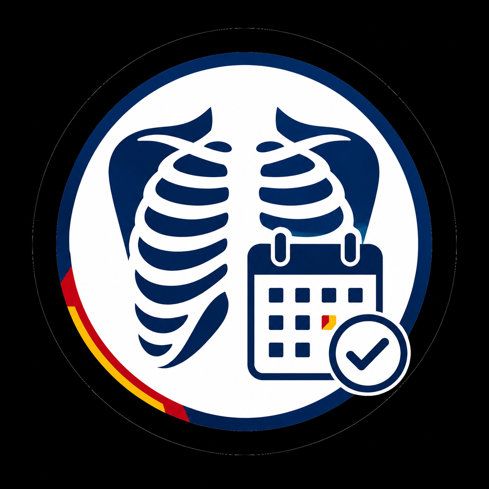

🌙

Convoca
T
E
Servicio de Imagenología
Elegí tu nombre
Cambiar de usuario
Cargando personas…
📅 Mis turnos 📅 Mis turnos
🔔 Activar notificaciones de la APP
Realizar un cambio en la convocatoria
Solicitar cambio de turno
Turno que querés ceder
Quién te cubre
Enviar solicitud
Cancelar
Horas este mes
0 / 80 hs
－
100%
＋
Elegí un sector arriba
Creá tu PIN
Confirmar
Cancelar
Detalle del turno
Cerrar